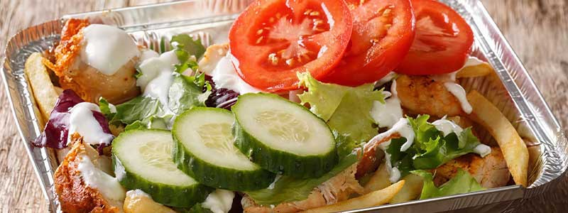
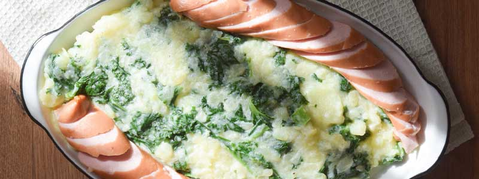
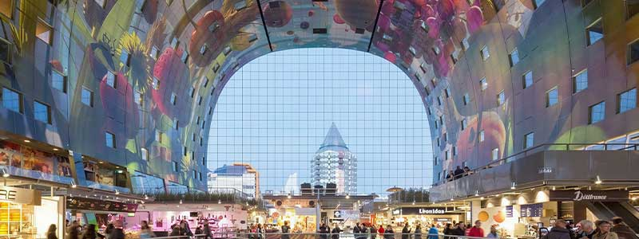
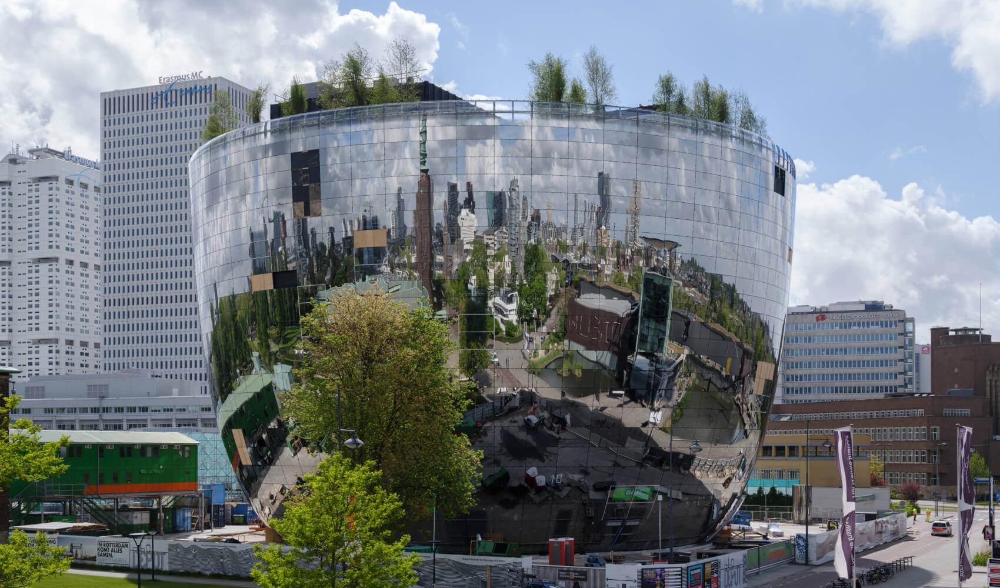

Dónde Comer
En este buscador, vas a poder filtrar por nombre, tipo de establecimiento y por barrio
ver más

En este buscador, vas a poder filtrar por nombre, tipo de establecimiento y por barrio
ver más
En Rotterdam vas a encontrar platos típicos y comida tipica de los paises bajos y de la región.
ver más
Conocé los patios y mercados en donde podés disfrutar de la mejor gastronomía de la ciudad.
ver más
Conocé el característico paisaje urbano de Rotterdam, sus edificios modernos, las Casas Cubo y el puente Erasmus.
Ver MásConocé el característico paisaje de los parques en Rotterdam.
Ver Más
Conocé el característico paisaje urbano de Rotterdam, sus edificios modernos, casas cubo y el famoso puente Erasmus.
Ver Más